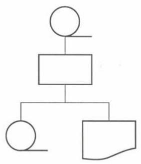

Lógica de programação
Aula 01 - Abordagem Contextual e Princípios de Resolução de Problemas
Igor Conrado Alves de Lima - prof.igor@microcamp.com.br
Quem sou eu?
- Graduando em Ciência da Computação pela Universidade Federal de Alagoas (UFAL)
- Professor de Inglês e Web Design na Microcamp
- Densenvolvedor Web (front-end e back-end)
- Fiz graduação sanduíche pela Australian National University (ANU)
- Fui estagiário de verão na Commonwealth Scientific and Industrial Research Organisation (CSIRO), agência governamental de pesquisa da Austrália
O que é lógica?
O que é lógica?
"Conjunto de estudos que visa determinar os processos intelectuais que são as condições gerais do conhecimento verdadeiro."
Por exemplo, lógica artistotélica:
Todo homem é mortal.
Sócrates é homem.
Logo, Sócrates é mortal.
O que é lógica?
Outras definições:
- "É a seqüência coerente, regular e necessária de acontecimentos, de coisas ou fatos." - Dicionário Aurélio
- "É a maneira do raciocínio particular que cabe a um indivíduo ou a um grupo." - Dicionário Aurélio
Definição de lógica
Em resumo
- "Lógica é a ciência que estuda as leis e critérios de validade que regem o pensamento e a demonstração, ou seja, ciência dos princípios formais do raciocínio." - (Manzano, 2000)
Mas...
O que é lógica de programação?
Lógica de programação é a técnica de desenvolver e encadear sequências lógicas de pensamento para atingir um determinado objetivo.
Por que precisamos de lógica?
Por que precisamos de lógica?
Para solucionar problemas de forma eficiente e eficaz.
Portanto...
Nosso objetivo é aprender como desenvolver e aperfeiçoar melhor essa técnica.
Como?
Persistindo e praticando constantemente!
Nomenclaturas
Fluxograma, Diagrama de Blocos, e Algoritmo
Nomeclaturas - Fluxograma
Ferramenta desenvolvida pelos profissionais de análise de sistemas para descrever o fluxo, seja manual ou mecânico, especificando suportes usados para os dados e as informações.
Usa símbolos geométricos para indicar entrada, processamento, e saída de dados, acompanhados dos procedimentos a serem realizados pelo programador.
É usado para gestão de negócio e não envolve aspectos técnicos de programação.
Nomeclaturas - Fluxograma
Exemplo de fluxograma:

Nomenclaturas - Diagrama de Blocos
Ferramenta desenvolvida por profissionais ligados à programação que visa descrever o método e a sequência do processo dos planos num computador.
Usa símbolos geométricos para estabelecer sequências de operações a serem efetuadas.
É usado para explicitar detalhes de programação paracada tipo de processo.
Nomenclaturas - Diagrama de Blocos
Nomenclaturas - Algoritmo
Um algoritmo é uma sequência finita de instruções bem definidas e não ambíguas, cada uma das quais pode ser executada mecanicamente em um período de tempo finito e com uma quantidade de esforço finita.
Por exemplo:
- Operações matemáticas básicas (adição, subtração, multiplicação, divisão)
- Receita de bolo
- Acender uma boca de fogão
- Verificar se aluno foi aprovado ou não
- etc.
Nomenclaturas - Algoritmo
Como multiplicar dois números?

Algoritmo: multiplicação de dois números
- Escreva o primeiro número no retângulo A
- Escreva o segundo número no retângulo B
- Multiplique o número do retângulo A pelo número do retângulo B e coloque o resultado no retângulo Resultado
Simbologias
Simbologias básicas
Simbologias básicas

Simbologias especiais
Princípios de Resolução de Problemas
Princípios de Resolução de Problemas
Problema é uma questão que foge a uma determinada regra, ou melhor, é o desvio de um percurso, o qual impede de atingir um determinado objetivo com eficiência e eficácia.
Diagramas de blocos são o melhor instrumento para avaliar um problema de fluxo de informações em um sistema.
Princípios de Resolução de Problemas
Como desenvolver um diagrama correto?
- Diagramas devem ser feitos e quebrados em vários níveis, sendo os primeiros mais gerais e os últimos mais detalhados;
- Sempre que possível, desenvolver de cima para baixo e da esquerda para direita;
- É incorreto e “proibido” ocorrer cruzamento das linhas de fluxo de dados.
Princípios de Resolução de Problemas
Exemplo:
Imagine uma escola qualquer, cujo cálculo da média é realizado com as quatro notas bimestrais que determinam a aprovação ou reprovação dos seus alunos. Considere ainda que o valor da média deve ser maior ou igual a 7 para que haja aprovação.
Princípios de Resolução de Problemas
Exemplo (primeira etapa):
Princípios de Resolução de Problemas
Exemplo (segunda etapa):
Princípios de Resolução de Problemas
Exemplo (terceira etapa):
Princípios de Resolução de Problemas
Exemplo (quarta etapa):
Português Estruturado
Português Estruturado
- Técnica narrativa para descrever algoritmos que independem da linguagem de programação (ex. JavaScript, PHP, C#, etc) em que serão implementados.
- Conhecido também como pseudocódigo ou portugol.
- Ao contrário de uma linguagem de programação, pseudocódigos não precisam de formalismos rígidos.
Português Estruturado - Exemplo
algoritmo "media"
// Função: Calculo da media de um aluno exibindo se foi aprovado ou reprovado
// Autor: Igor
// Data: 22/8/2015
var
resultado: caractere
n1, n2, n3, n4: real
soma, media: real
inicio
leia(n1, n2, n3, n4)
soma <- n1 + n2 + n3 + n4
media <- soma / 4
se (media >= 7) entao
resultado <- "Aprovado"
senao
resultado <- "Reprovado"
fimse
escreva("Resultado: ", resultado)
fimalgoritmoHora de exercitar!